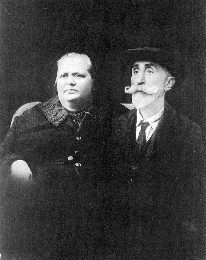
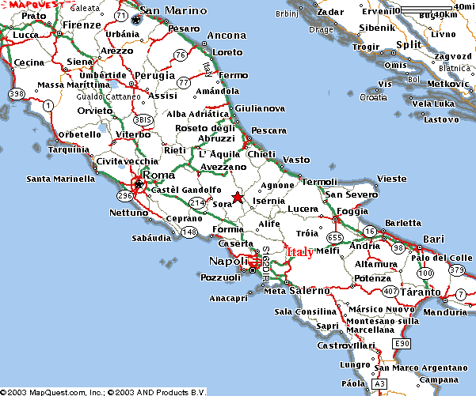
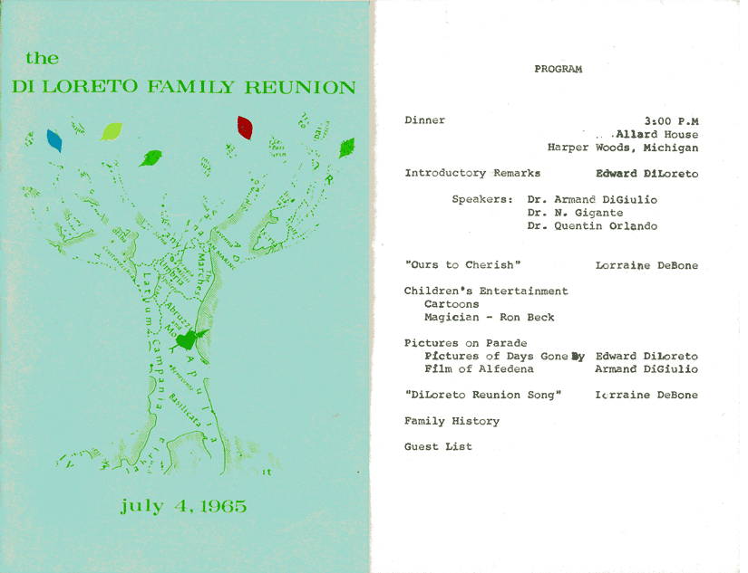

Click below to view enlarged images.

Panfilo & Eufrasia DiLoreto


The wedding of Gaetano D'Amico and Cleonice
DiLoreto with Remo and Marianna (D'Amico)
DiLoreto (Aug. 23, 1913)

The 13 Branches of Panfilo and Eufrasia DiLoreto

1943 Detroit Free Press Article


Map of Abruzzi with Arrow Pointing to Alfedena Near Bottom

Location of DiLoreto Homestead in Alfedena

Front cover and first page of the program from the 1965 DiLoreto Family
Reunion

Don't
Miss These Additional Pages: Recent
Photos of Alfedena, Italy
Antique Picture Postcards from Alfedena
1946 Panoramic Views of Alfedena
1946 Relatives from Alfedena
We came from Alfedena. Like many DiLoreto's, our immediate ancestors came from the town of Alfedena, L'Aquila, Italy, in which 700 inhabitants remain today. Other DiLoretos come from the nearby town of Barrea. The recorded beginnings of our family tree dates from the mid-seventeenth century.
Our grandfather, Remo DiLoreto was one of 13 children of Panfilo DiLoreto and Eufrasia Gigante. Remo emigrated in 1909. His his large family were part of a wide migration from these two towns to the United States at the turn of the 20th century. A hand-drawn family tree shows these siblings, their spouses and emigration and marriage dates.
In 1911, Remo married Marianna (Mary) D'Amico, one of 11 children, also from Alfedena. They settled in the Eastern Market area of Detroit, raising three sons, Panfilo, Oscar and Gilbert and a daughter, Emma. From them, there are 12 first-cousins, six of us carring the family name to the next generation.
A genealogical record of the DiLoreto lineage is maintained, and we would love to hear from any relatives with updates. An updated copy of the complete family tree can be sent as a PDF to family members. Please contact DiLoreto.com.
The Loyal Wing Club. Many "Alfedenesi" settled in Detroit, beginning in 1886 with the DiFilippo's and DiFalco's. By 1900 there were 100 Alfedesi in Detroit, helping to build stone buildings before there was concrete. In 1960 it was reported that there were more people from Alfedena and their descendants living in Detroit (1,680), than Alfedena's population at the time (1,430). By 1979 the number in Detroit swelled to 2 to 3 thousand. They founded the Loyal Wing Club in 1919 and leased 72 acres on Soft Water Lake, north of Pontiac, the article said. In 1960 they opened a clubhouse at 11250 Hayes, sold in 1984. The club is said to meet at the Italian-American Cultural Center in Warren.
150 attended a 1965 DiLoreto Family Reunion in Harper Woods, Michigan, whose program outlines the the complete family lineage from Panfilo and Eufrasia to that day. Since that time, a genealogical database has been compiled of over 500 their decendants, as well as acestors dating back to the mid-1600's. The oldest portion of the DiLoreto Family tree is reproduced here. Please contact DiLoreto.com, if you have questions.
Alfedena History. A 1960 article in the Detroit Free Press accounts that Alfedena was given its name from its distinguished defense of Rome from Hannibal in 216 B .C., after which Imperial Rome bestowed the title "Ala Fidelis," or "Loyal Wing." Ancient "Aufidena" was home to many stonecutters, which paved most of the streets of midieval Rome and later paved streets throughout Europe and North Africa, according to a report by Armand DiGuilio, the oldest grandchild of Panfilo and Eufrasia, given at a 1979 DiLoreto family reunion.
A G.I.'s Visit to Alfedena in 1946. When Gilbert DiLoreto, still in the service, visited Alfedena after World War II, he met with several of his relatives. A number of pictures remain from the trip, and we have reproduced some of them here. Take a look and see if you can help us identify these relatives from long ago!
Geography. Alfedena is located north of Naples and a three-hour drive east of Rome, on the south edge of the province of L'Aquila and of the Abruzzi region. It is situated on the Sangro River at an elevation of about 3000 feet in the craggy foothills of the Appenine Mountains, just north of the Meta Mountains. A small stream called Rio Torto divides the town with the main square and stony hills on the left. The flat land on the right was inhabited from the early Middle ages. See maps below.
Family Name History.
From The Historical Research Center
Submittedby Joanne Monroe, 1993
The Italian surname DiLoreto is local in origin, being one of those surnames derived from the name of the place where the original bearer once lived or owned land. In this case, the surname composed of two elements, "Di" and "Loreto," is derived from the place named Loreto, located in the province of Ancona, on the eastern coast of Italy. This town became a famous place of pilgrimage because of the "Holy House" located there. This shrine was said to have been the home of the Virgin Mary in Nazareth and (according to legend) was brought to Loreto by Angels in 1295.
Before the advent of a formal system of hereditary family surnames, it was comon practice to name a person according to his place of origin. With the growth of documentation in the later Middle Ages, surnames became essential and people therefore registered using the names by which they were known.
DiLoreto was the surname of a noble Italian family that came to prominence in the fourteenth century, when King Robert made Bernardo Cristofor the first Count di Loreto in the year 1330. Another notable family were the di Loreto of Genua. Of this family, one Luca di Loreto is mentioned for the year 1528. The following is the coat of arms for the di Loreto family of Genua:
Blazon of Arms: Azure, a tree on a grassy plain all proper, overall a fess gules.
Translation:The tree is the symbol of Antiquity and knowledge. The fesse is a horizontal partition signifying the Military Belt and Girdle of Honor worn in ancient times.
Crest: Three ostrich plumes proper.
Origin: Italy
From the Istituto Genealogico Italiano comes an "Historical and Heraldic Information on the DiLoreto Stock" translated from Italian as follows:
The DI LORETO Family vaunts its descendance from the very ancient stock of the D'Aquino, of Longobard origin, and acknowledges as its forefather one Atenolfo, Lord of Capua in 996.
The Family owned several feuds, amongst which the most important were: the County of Aquino from which it drew its name (996), Acerra (1121), Alife (1205), the County of Loreto (1330), the Marquisates of Pescara (1412) and of Atessa; the Duchies of Gaeta (1050) and of Bisceglie (1536) and the Principality of Castiglione (1002).
They were extremely prolific people, so that they divided into a great number of families: the Alvito delle Grotte, Acerra, Santomango, Castiglione and DI LORETO, so named from the feuds they owned.
The important branch that affirmed itself by the name of DI LORETO starts with Berardo, son of the count Cristoforo, who in 1330 was invested of the county of Loreto by King Roberto of Anjou in reward for his services rendered to the Crown.
Cristoforo was in fact Chamberlain to King Roberto, and distinguished himself for having held with courage and skill the office of Captain General and Justiciar in the Principality of Ultra.
The same King Roberto entrusted to Berardo, Count of Loreto a delicate embassy to Hungary, but the Hungarians held as prisoners the envoys of the Anjevin King who was compelled to arm a galeon at Viesti, and sent it to rescue the Count of Loreto and the other ambassadors who were thus able to return to Naples.
Taken as a whole the stock of the DI LORETO that branched in the centres of the Abruzzi, is always composed of the great grand children of the Counts of Aquino who had vast feudal posessions, privileges, princely honours, power and fame of nobility in the Kingdom of Naples.
Links. For further information on the region and genealogy searches:
Surnames Presently Recorded in Alfedena
Pedigree Pages - Scroll Down to 244 DiLoreto's
DiLoreto Genealogy Resource Center - SurnameWeb
Ancestry World Tree Project: DiLoreto
Ancestry.com - Global Search Results: DiLoreto
Genealogy Research in Abruzzo: Useful Links
Did you know? DiLoreto is
the 40,915th most popular last name (surname) in the United States; frequency
is <0.0005%; percentile is 84.289 [SourceCBN]


DiLoreto ancestors are traced to Pasquale and Lucia DiLoreto.

Nick and Mary (Monacelli) DiLoreto with two of their sons, William (left) and Julio in front of the store they owned in Erie, Penn. c.1950
[ DiLoreto Home | About | Bandwagon | Links | Guestbook | Are You a DiLoreto? | Paul's Website ]